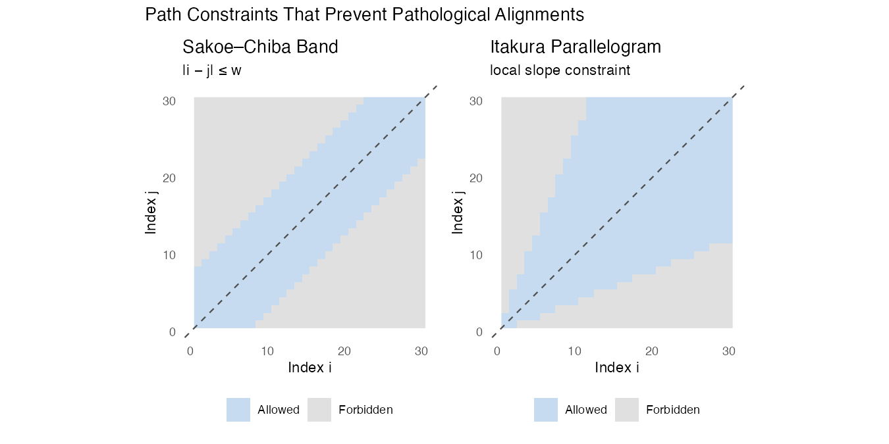
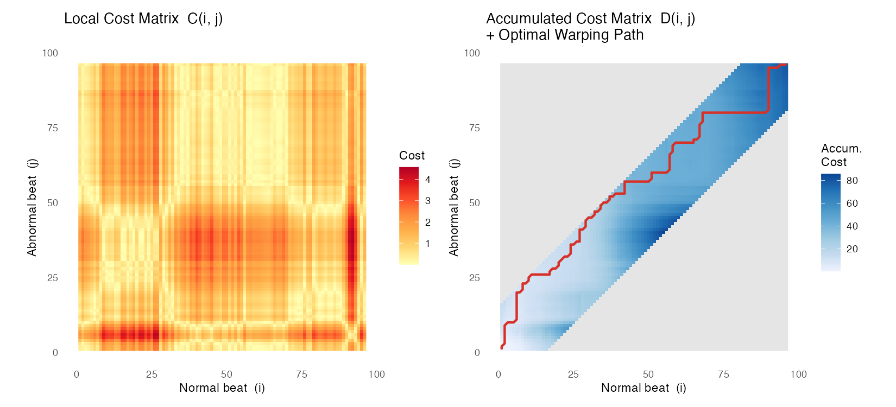
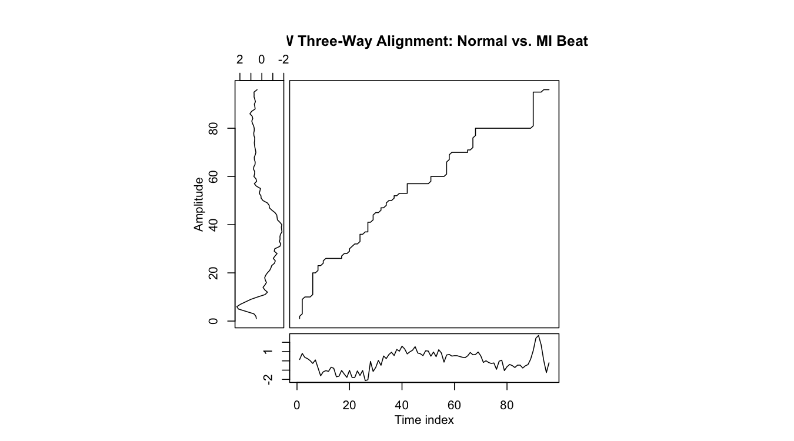

Core Ideas
ECG200 Illustration · Time Series Analysis Final Project
Motivation: Why Not Just Use Euclidean Distance?
When we compare two time series, the most natural instinct is to measure the Euclidean distance — subtract corresponding points, square, sum, and take a root. This works perfectly when two signals are in lockstep. But real-world signals are rarely so cooperative.
Consider two ECG heartbeat recordings from the same healthy patient taken minutes apart. The QRS complex (the sharp spike) may appear a fraction of a second earlier in one recording than the other, simply because the patient’s heart rate varied slightly. Euclidean distance would report a large mismatch even though the two signals are functionally identical.
Dynamic Time Warping (DTW) was introduced precisely to handle this problem. It finds the optimal alignment between two sequences by allowing one sequence to be non-linearly “warped” in time before measuring the distance between them.
Key intuition: DTW asks “how much work does it take to deform one signal in time so that it best matches the other?” The answer to that question is the DTW distance.
How DTW Works
Setting Up the Cost Matrix
Let \(\mathbf{x} = (x_1, x_2, \ldots, x_n)\) and \(\mathbf{y} = (y_1, y_2, \ldots, y_m)\) be two time series of (possibly different) lengths \(n\) and \(m\).
Step 1 — Local cost matrix \(C\).
Construct an \(n \times m\) matrix where each entry \(C(i, j)\) records the local dissimilarity between \(x_i\) and \(y_j\). Squared Euclidean distance is the most common choice:
\[C(i,j) = (x_i - y_j)^2\]
Think of \(C\) as a terrain map. Cells with small values are valleys (the two signals agree at those positions); cells with large values are mountains (they disagree). As Tavenard (2021) describes it, this matrix encodes “how similar is \(x_i\) to \(y_j\)” for all possible index pairs simultaneously.
Step 2 — Accumulated cost matrix \(D\).
We then compute the accumulated (or cumulative) cost matrix \(D\) using dynamic programming. \(D(i, j)\) stores the minimum total cost of any path that starts at \((1, 1)\) and reaches \((i, j)\):
\[D(1, 1) = C(1, 1)\]
\[D(i, j) = C(i, j) + \min\bigl(D(i-1,\, j),\; D(i,\, j-1),\; D(i-1,\, j-1)\bigr)\]
The three candidates in the \(\min\) correspond to the three legal step directions: advance only in \(\mathbf{x}\), advance only in \(\mathbf{y}\), or advance in both simultaneously.
The DTW distance is the value at the bottom-right corner of \(D\):
\[\text{DTW}(\mathbf{x}, \mathbf{y}) = D(n, m)\]
The Warping Path
Once \(D\) is filled in, the warping path \(\mathcal{W}\) is recovered by tracing back from \((n, m)\) to \((1, 1)\), always stepping toward whichever neighbor had the smallest accumulated cost. The path is a sequence of index pairs \((i_k, j_k)\) that describes which point of \(\mathbf{x}\) is matched to which point of \(\mathbf{y}\).
A valid warping path must satisfy three structural properties:
| Property | What it means |
|---|---|
| Boundary | Starts at \((1, 1)\) and ends at \((n, m)\) — both series are fully covered |
| Continuity | Each step moves at most one index in either direction — no skipping |
| Monotonicity | Indices never decrease — time cannot run backwards |
These three properties together guarantee that the alignment is physically meaningful: every point gets matched, the matching never “jumps,” and the order of events is preserved.
Constraints That Prevent Pathological Alignments
Without additional restrictions, the DTW optimisation can find alignments that are numerically cheap but practically absurd. The most extreme case is a degenerate alignment where the algorithm maps one single point of x x to the entire sequence y y — every point in y y gets matched to that one point, the path hugs a wall of the matrix instead of the diagonal, and the cost can be very low while the alignment is completely meaningless. The three structural rules (boundary, continuity, monotonicity) prevent the worst violations, but they do not bound how far the path can stray from the diagonal. Two additional constraints address this directly.
The Sakoe–Chiba Band
The Sakoe–Chiba band (Sakoe & Chiba, 1978) restricts the warping path to a diagonal corridor of width \(w\):
\[|i - j| \leq w\]
Only cells within this band are ever filled in \(D\); all others are set to \(\infty\). This prevents a situation where the entire beginning of one series maps to just the first sample of the other. It also dramatically speeds up computation — from \(O(nm)\) for unconstrained DTW down to \(O(n \cdot w)\).
The bandwidth \(w\) is a tuning parameter: setting \(w = 0\) recovers Euclidean distance; setting \(w = \max(n, m)\) gives unconstrained DTW.
The Itakura Parallelogram
The Itakura parallelogram (Itakura, 1975) takes a different angle: rather than bounding the absolute position of the path, it constrains the local slope. The path cannot advance more than two steps in one direction for every one step in the other, keeping the slope between \(\frac{1}{2}\) and 2. This prevents a long run of identical or near-identical values in one series from being collapsed onto a single point of the other — a failure mode the Sakoe–Chiba band alone does not rule out.
Both constraints encode the same domain knowledge: a meaningful alignment between two similar signals should not require dramatic time distortions.

DTW in Action — A Worked Example
To make the cost-matrix and warping-path concepts concrete, we apply DTW to two actual ECG beats from the training set: one normal beat and one MI beat, using a Sakoe–Chiba band of width 15 (approximately 15% of the signal length).
The Cost and Accumulated Cost Matrices
The left panel below shows the local cost matrix \(C\): bright (yellow) cells are pairs of time points where the two signals agree most; dark (red) cells are where they differ most. The right panel shows the accumulated cost matrix \(D\) with the optimal warping path overlaid in red.
The path hugs the main diagonal, confirming the two beats are broadly similar in timing. Where it bends away from the diagonal — primarily around the QRS region — DTW is absorbing the morphological difference between the sharp normal R-wave spike and the flattened MI profile.

Signal Alignment Visualisation
The three-way alignment plot shows the two raw signals alongside the point-to-point correspondences defined by the warping path. Each connecting line links a time point in the normal beat (top) to its matched point in the MI beat (bottom). The right panel confirms the path deviates from the diagonal near the QRS region — where the largest shape difference between the two beat types occurs.

Section Summary
| Concept | Key Takeaway |
|---|---|
| Local cost matrix \(C\) | Pairwise dissimilarity between every time-point pair — the “terrain” DTW traverses |
| Accumulated cost matrix \(D\) | Minimum-cost path to \((i,j)\), built by dynamic programming |
| Warping path \(\mathcal{W}\) | Optimal alignment recovered by back-tracing \(D\) |
| Boundary / Continuity / Monotonicity | Structural rules ensuring the path is complete, connected, and time-forward |
| Sakoe–Chiba band | Limits degree of time warping; prevents degenerate alignments; speeds computation |
| ECG200 dataset | 100-train / 100-test ECG beats, 96 time points, binary label (normal vs. MI) |
References
Giorgino, T. (2009). Computing and visualizing dynamic time warping alignments in R: The dtw package. Journal of Statistical Software, 31(7), 1–24. https://doi.org/10.18637/jss.v031.i07
Itakura, F. (1975). Minimum prediction residual principle applied to speech recognition. IEEE Transactions on Acoustics, Speech, and Signal Processing, 23(1), 67–72.
Olszewski, R. T. (2001). Generalized feature extraction for structural pattern recognition in time-series data [Doctoral dissertation, Carnegie Mellon University].
Sakoe, H., & Chiba, S. (1978). Dynamic programming algorithm optimization for spoken word recognition. IEEE Transactions on Acoustics, Speech, and Signal Processing, 26(1), 43–49.
Tavenard, R. (2021). An introduction to dynamic time warping. https://rtavenar.github.io/blog/dtw.html
UCR Time Series Classification Archive. (n.d.). ECG200 dataset description. https://www.timeseriesclassification.com/description.php?Dataset=ECG200